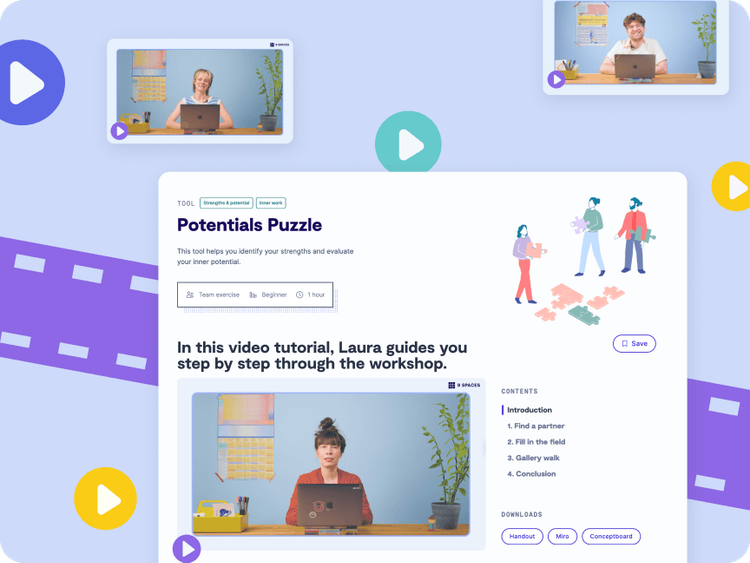

Explore our tutorial videos to support your workshops
9 Spaces is evolving into a video platform. On this page, you’ll find a list of all tutorial videos on 9 Spaces.
Our video tutorials are only available with a 9 Spaces subscription. Learn more


Demo call
Book a call with our team
Let’s talk about how your team or organisation can unlock the full potential of 9 Spaces with real examples from other organisations.